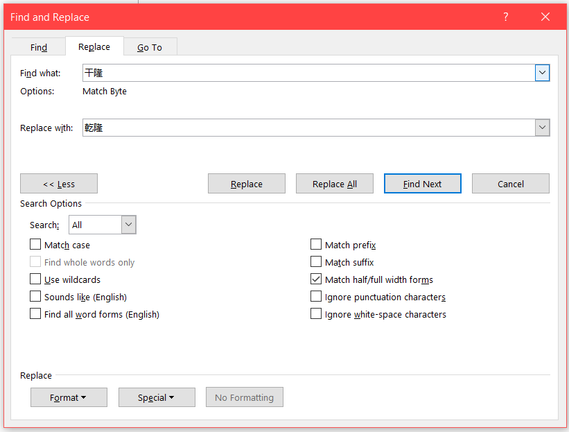
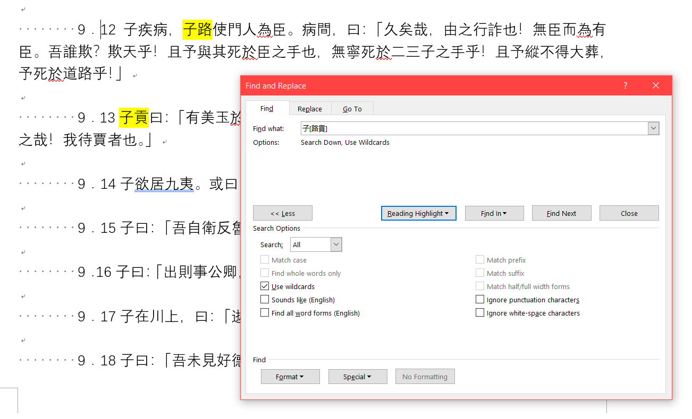
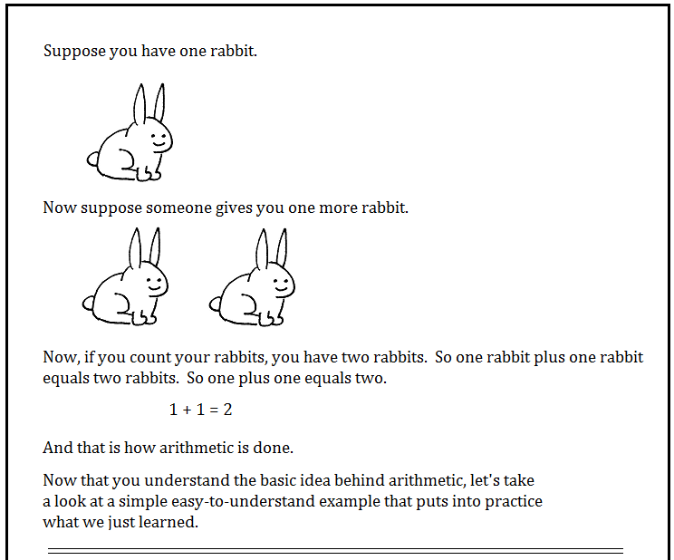
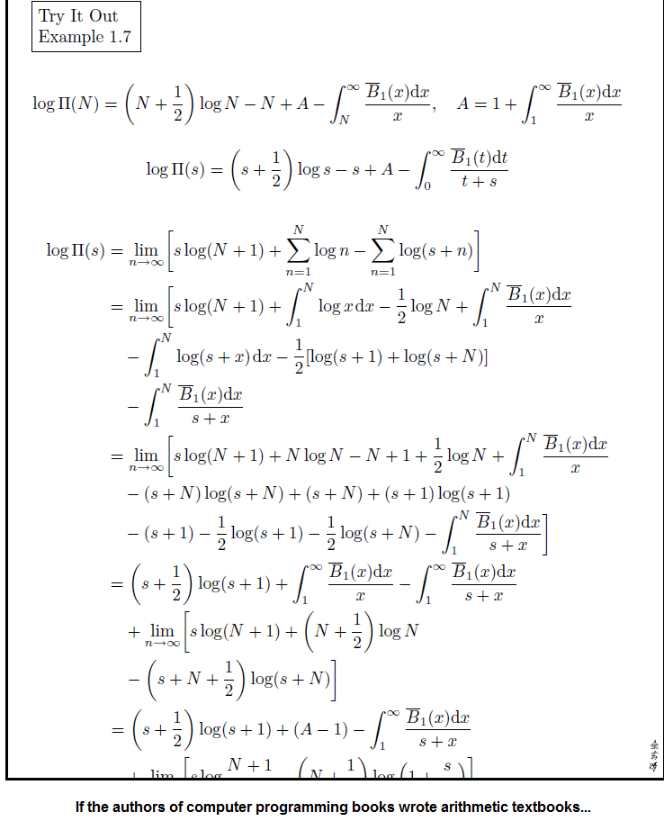
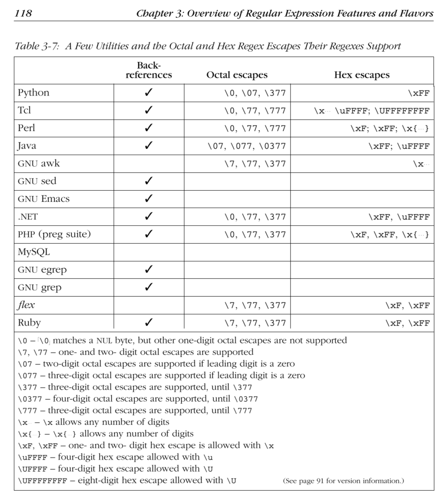
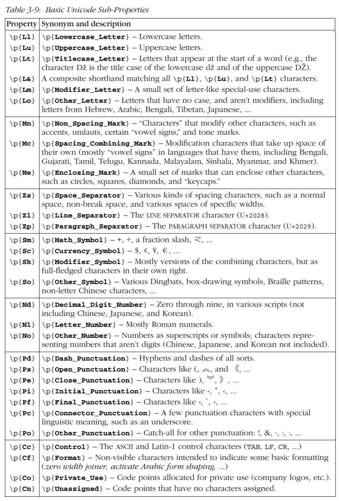

Li Linfang
2026.1.20
Regular Expression and Philology
The Department of Chinese Language and Culture, Peking University, Li Linfang
Have Fun!
说文解字注
說文解字注
説文解字注
説文解字註所有子曰的文句：
子曰：學而時習之……
子在川上曰：……
孔子曰……所有無“子曰”的文句只檢索《詩經》的注釋，而非正文？只检索汉字/标点/拉丁字母/日文假名？陸德明撰，黃焯彙校《經典釋文彙校》，中華書局，2006年，第216頁。
陸德明撰，黃焯彙校《經典釋文彙校》，中華書局2006年版，216頁。如何清理以下内容？
《鵲巢》相關討論 顯示更多訊息
提到《鵲巢》的書籍 電子圖書館
1 打開字典顯示相似段落相關討論顯示更多訊息 鵲巢:
維鵲有巢、維鳩居之。
之子于歸、百兩御之。
2 打開字典顯示相似段落相關討論顯示更多訊息 鵲巢:
維鵲有巢、維鳩方之。
之子于歸、百兩將之。
3 打開字典顯示相似段落相關討論顯示更多訊息 鵲巢:
維鵲有巢、維鳩盈之。
之子于歸、百兩成之。🍳普通检索 Word 
🔬通配符 Word 
# 通配符
dir *.docx(?# 正则表达式)
^.+\.docx$abcdefgbcd惠子相梁，莊子往見之。孔子|孟子|[庄莊]子我正在读《中国古文献学史》。《.+》我正在读《四书章句集注》和《朱子语类》。《[^》]+》abc
123
Hello! Nice to see you!
好好学习，天天向上。
1\+1=2
Here lies a line break\. \nA metacharacter is a character that has a special meaning to a computer program, such as a shell interpreter or a regular expression (regex) engine.
Wikipedia
\ ^ $ . | ? * + ( ) [ {. [abc] [^abc] \d
? * +
^ $
| (abc) \1. [abc] [^abc] \d鲁.公
鲁[隐桓庄闵]公
[说説說]文解字
子[曰云]
[^孔]子? # 零次一次
* # 零次或多次
+ # 一次或多次
{8} # 8次
{9,} # 9次或更多次
{2,10} # 2次到10次胡适之?
[诗詩].*[礼禮]
[诗詩].+[礼禮]
[诗詩].{1,5}[礼禮]^ $^\d
^王
^2300014
^2300014\d{3}$
”$| (abc) \1王念孙|王引之
(.)\1《孟子集注》卷一：
《孟子·梁惠王章句上》：“孟子見梁惠王。王曰：‘叟不遠千里而來，亦將有以利吾國乎？’孟子對曰：‘王何必曰利？亦有仁義而已矣……’”（朱熹《四書章句集注》，中華書局，1983年，第201頁。）
《孟子·梁惠王章句上》：“孟子見梁襄王。”（朱熹《四書章句集注》，第206頁。）
《孟子集注》卷十四：
《孟子·盡心章句下》：“孟子曰：‘春秋無義戰。’”（朱熹《四書章句集注》，第364頁。）
《孟子集注》卷八：
《孟子·離婁章句下》：“孟子告齊宣王曰：“‘君之視臣如手足，則臣視君如腹心；君之視臣如犬馬，則臣視君如國人；君之視臣如土芥，則臣視君如寇讎。’”（朱熹《四書章句集注》，第290頁。）
《孟子正義》卷六：
《禮記·投壺篇》注“奇則縮諸純”，《釋文》云：“縮，直也。”《廣雅·釋詁》云：“直，義也。”縮之爲義，猶縮之爲直。蓋縮之訓爲從，從故直。從亦順也，順故義；義者，宜也。趙氏既以義訓縮，又申之云“不義不直”，明義卽直也。（焦循撰，沈文倬點校《孟子正義》，中華書局，1987年，第193頁。）. [abc] [^abc] \d
梁.王
梁[惠襄]王
[：，“”‘’……。？（）《》·]
[^：，“”‘’……。？（）《》·\n]
\d\d\d\d年? * +卷[〇一二三四五六七八九十]+
[：，“”‘’……。？（）《》·]+
[^：，“”‘’……。？（）《》·\n]+
\d+年
《[^》]+》
孟子對?曰
(# Question:)
孟子.*曰^ $^《
：$
^.*：$
^《[^》]+》卷[〇一二三四五六七八九十]+：$| (abc) \1梁惠王|梁襄王|齊宣王
(梁惠|梁襄|齊宣)王
(梁[惠襄]|齊宣)王
^《孟子集注》卷(.+)：$
《孟子集注》第\1卷：. [abc] [^abc] \d
? * + {min, max}
^ $
| (abc) \1❓综合应用题
请将原文中的出处改为以下样式：
［朱熹：《四書章句集注》，中華書局1983年版，201頁。］
［朱熹：《四書章句集注》，206頁。］（(.+)《([^》]+)》(，(.+)，(\d+)年)?，第(\d+)頁。）
［\1：《\2》，\4\5年版，\6頁。］
，年版，
，# PCRE2
［$1：《$2》，${3:+$4$5年版，:}$6頁。］In computing and telecommunication, an escape character is a character that invokes an alternative interpretation on the following characters in a character sequence.
Wikipedia
\+元字符=非元字符\* \+ \[\] \\\+某些非元字符=元字符\1 \z \Z \Q \E\+某些非元字符=控制字符\t \n\+某些非元字符=该字符本身\y"\n \t \\"需特别留意相应编程语言中字符串转义的情况！
re.match("\\","\\")error: bad escape (end of pattern) at position 0re.match("\\\\","\\")
re.match(r"\\","\\")
| PL | hex | RE | explantion |
|---|---|---|---|
t |
74 | 74 | t |
\t |
5C 74 | 09 | tab |
\\t |
5C 5C 74 | 5C 74 | \+t=tab |
\\\t |
5C 5C 5C 74 | 5C 09 | \+tab=tab |
\\\\t |
5C 5C 5C 5C 74 | 5C 5C 74 | \+\+t=\+t |
\\\\\t |
5C 5C 5C 5C 5C 74 | 5C 5C 09 | \+\+tab=\+tab |
\\ |
5C 5C | 5C | \=ERROR |
\\\\ |
5C 5C 5C 5C | 5C 5C | \+\=\ |
Python 的相关说明参见：https://docs.python.org/3/library/re.html


[a-z]
[^a-z]问题：( * ] \ ^ - +哪个是字符组的元字符？
问题：[^.] 匹配的是什么？
] \ ^ -元字符在字符组内外是有差异的！
问题：戴[^震]
能匹配哪（几）个字符串西汉戴德 戴圣
大小戴？
排除型字符组仍然需要匹配字符！
问题： 《[^）]+的匹配状况？
《文王有聲》，繼伐也。武王能廣文王之聲，卒其伐功也。（繼伐者，文王伐崇，而武王伐紂。）
《生民》，尊祖也。后稷生於姜嫄文、武之功起於后稷，故推以配天焉。
《下武》，繼文也。武王有聖德，復受天命，能昭先人之功焉。（繼文者，繼文王之王業而成之。昭，明也。）在多行检索时，排除型字符组会匹配换行符！
[a-zA-Z0-9]
[abc你我他][\u4e00-\u9fff\u3400-\u4dff][class-[subtract]]
[a-z-[aeiou]][\p{han}-[\u4e00-\u9fff]]# Chinese Characters from https://ctext.org/font-test-page/zh
import regex
s = """字的類型 示範 您的瀏覽器
繁體中文 義、禮、說、選
簡體中文 义、礼、说、选
CJK擴展A區 㡛、㬐、㖧、䵍
CJK擴展B區 𣚣、䶅、𪘆、𦞕
CJK擴展C區 𪢨、𪪖、𫔺、𫜴
CJK擴展D區 𫝀、𫞂、𫝻、𫠝
CJK擴展E區 𫠫、𬚚、𬳕、𬺡
"""
regex.findall(r"[\p{han}--[\u4e00-\u9fff]]", s, regex.V1)
# 排除C区
regex.findall(r"[\p{han}--[\U0002A700-\U0002B734]]", s, regex.V1)[class&&[intersect]]
[a-z&&[^aeiou]][\p{han}&&[^\u4e00-\u9fff]]要特别注意兼容性的问题。
Python 的 regex 包支持更复杂的字符组运算。 详 https://pypi.org/project/regex/ .
(?# digit)
\d [0-9]
\D [^\d]
(?# word character)
\w [A-Za-z0-9_]
\W [^\w]
(?# white character)
\s [ \t\r\n\f] (?# 根据流派，还可能匹配其他)
\S [^\s].问题：以下正则表达式的匹配情况？
子曰：.+学子曰：
德之不修，学之不讲，闻义不能徙，不善不能改，是吾忧也。.一般不匹配换行符。 除非使用“单行模式”single-line mode。
"\n" # Unix, Unix-like (Linux, macOS, etc.)
"\r\n" # Windows, DOS
"\r" # classic Mac OS各种正则流派一般都将\n作为换行符。
? * + {min, max}
? {0, 1}
* {0, }
+ {1, }.*
.+
李太?白
胡适之?
[〇一二三四五六七八九]{1, 3}
子曰.{1,10}书愚謂當廣之爲二十一經。《禮》益以《大戴禮》，《春秋》益以《國語》、《史記》、《漢書》、《資治通鑑》，《周禮》“六藝”之書數，《爾雅》未足當之也，取《說文解字》、《九章算經》、《周髀算經》以益之，……
段玉裁《十經齋記》，段玉裁撰、鍾敬華校點《經韻樓集》，上海古籍出版社，2008年，第236頁。《.+》《[^》]+》《.+?》*?
+?
??
{0, 10}?^ $
^ \A
\Z \z好好学习\n天天向上\n学^学$\b \B\bword\b
\bis\bThis is an example.四库|四库全书|四库全书总目|四库全书总目提要
胡适|胡适之
星际|星际争霸四库全书总目提要|四库全书总目|四库全书|四库
胡适(之)?
星际(争霸)?❓匹配结果如何？
我书架上有一本《四库全书总目提要》。总目|总目提要|四库全书总目|四库全书总目提要(abc) \1 \2 $1 $2
(?:abc)(?=abc)
(?!abc)
(?<=abc)
(?<!abc)(?=.+abc)
(?!.+abc)
(?<=.+abc)
(?<!.+abc)(?=(\d+))\w+\1123x12^(?=.*a)(?=.*b)
^(?=.*a)(?=.*b).*$
^(?=.*勇)(?=.*仁).*$^(?:(?!abc).)*$
^(?!.*abc).*$
^(?:(?!子路).)*$
^(?!.*子路).*$宜室宜家
无时无刻
人来人往
载歌载舞
考虑考虑
嘈嘈切切
关关雎鸠
在河之洲(.)(.)(?<!\1)\1.(?<!\1|\2)\x61 # a
\u0061 # a
\u4e00 # 一
\x{4e00}
\x{2a6a5} # 𪚥u"\u4e00"
u"\U0002a6a5"
re.match(r"\U0002a6a5", "𪚥")\p{Prop} \P{Prop}
\p{P}
\p{Latin}
\p{Han}
\p{Hiragana}
\p{Katakana}
\p{InCJK_Unified_Ideographs_Extension_A}
\p{InYijing_Hexagram_Symbols} # ䷀

g: global.m: multi line.
^ $s: single line.
.u: unicode.i: insensitive. Case
insensitive [a-zA-Z].U: Ungreedy.man: man grep
man re_formatnormal mode 之中文输入grep egrep (grep -E) rg
grep -e ... -e ... orgrep -vvim
... |& vim - pipe &
toolchain%! grep ...the match is first attempted at the very beginning of the string to be searched (just beforethe first character). “Attempted” means that every permutation of the entire(perhaps complex) regex is tested starting right at that spot. If all possibilities are exhausted and a match is not found, the complete expression is re-tried starting from just before the second character. This full retry occurs at each position in the string until a match is found. A “no match” result is reported only if no match is found after the full retry has been attempted at each position all the way to the end of the string (just after the last character).
(P148)
st=>start: Start
op1=>operation: n=0
op2=>operation: 从第n个字符之前尝试匹配
op3=>operation: n=n+1
cond1=>condition: 是否匹配
cond2=>condition: n==字符串长度
o1=>inputoutput: 输出匹配项
o2=>inputoutput: 不匹配
e=>end
st->op1->op2->cond1
cond1(yes)->o1->e
cond1(no)->op3(right)->cond2
cond2(yes)->o2->e
cond2(no)->op2Copyright 2003^.*([0-9]+)| Regex | Text | Saved states |
|---|---|---|
| ˇ孔夫?子 | ˇ孔子 | |
| 孔ˇ夫?子 | 孔ˇ子 | R:孔夫?ˇ子 T:孔ˇ子 |
| 孔夫?ˇ子 | 孔ˇ子 |
| Regex | Text | Saved states |
|---|---|---|
| (ˇ新校互註|新校互注)宋本(广|廣)韻 | ˇ新校互注宋本广韵 | R:(新校互註|ˇ新校互注)宋本(广|廣)韻 T:ˇ新校互注宋本广韵 |
| (新校互ˇ註|新校互注)宋本(广|廣)韻 | 新校互ˇ注宋本广韵 | R:(新校互註|ˇ新校互注)宋本(广|廣)韻 T:ˇ新校互注宋本广韵 |
| (新校互註|ˇ新校互注)宋本(广|廣)韻 | ˇ新校互注宋本广韵 | |
| (新校互註|新校互注)宋本(ˇ广|廣)韻 | 新校互注宋本ˇ广韵 | R:(新校互註|新校互注)宋本(广|ˇ廣)韻 T:新校互注宋本ˇ广韵 |
| (新校互註|新校互注)宋本(广|廣)ˇ韻 | 新校互注宋本广ˇ韵 | R:(新校互註|新校互注)宋本(广|ˇ廣)韻 T:新校互注宋本ˇ广韵 |
| (新校互註|新校互注)宋本(广|ˇ廣)韻 | 新校互注宋本ˇ广韵 |
| Regex | Text | Saved states |
|---|---|---|
| ˇ《.+》 | 这本ˇ《诗经》好看！ | |
| 《ˇ.+》 | 这本《诗经》好看！ˇ | 这本《诗ˇ经》好看！ 这本《诗经ˇ》好看！ 这本《诗经》ˇ好看！ 这本《诗经》好ˇ看！ 这本《诗经》好看ˇ！ |
| 《.+ˇ》 | 这本《诗经》好看！ˇ | 这本《诗ˇ经》好看！ 这本《诗经ˇ》好看！ 这本《诗经》ˇ好看！ 这本《诗经》好ˇ看！ 这本《诗经》好看ˇ！ |
| 《.+ˇ》 | 这本《诗经》好看ˇ！ | 这本《诗ˇ经》好看！ 这本《诗经ˇ》好看！ 这本《诗经》ˇ好看！ 这本《诗经》好ˇ看！ |
| 《.+ˇ》 | 这本《诗经》好看ˇ！ | 这本《诗ˇ经》好看！ 这本《诗经ˇ》好看！ 这本《诗经》ˇ好看！ 这本《诗经》好ˇ看！ |
| 《.+ˇ》 | 这本《诗经》好ˇ看！ | 这本《诗ˇ经》好看！ 这本《诗经ˇ》好看！ 这本《诗经》ˇ好看！ |
| 《.+ˇ》 | 这本《诗经》好ˇ看！ | 这本《诗ˇ经》好看！ 这本《诗经ˇ》好看！ 这本《诗经》ˇ好看！ |
| 《.+ˇ》 | 这本《诗经》ˇ好看！ | 这本《诗ˇ经》好看！ 这本《诗经ˇ》好看！ |
| 《.+ˇ》 | 这本《诗经》ˇ好看！ | 这本《诗ˇ经》好看！ 这本《诗经ˇ》好看！ |
| 《.+ˇ》 | 这本《诗经ˇ》好看！ | 这本《诗ˇ经》好看！ |
| 《.+ˇ》 | 这本《诗经ˇ》好看！ | 这本《诗ˇ经》好看！ |
global，则移动至匹配之文本的后一位置重新尝试。Copyright 2003^.*([0-9]+)ABCD(.+)+X*?
*+*?
+?
??
{min, max}?《.+》
《.+?》a*+
a++
a?+
a{1,10}+(.+)+X
(.++)+X《some book name with an open parenthesis《[^》]++》《abc》abc《.*》
《.*+》^ \A
$ \Z \z
\G\G观察如下文本并思考：
《五经》包括：易、书、诗、礼、春秋。
No1 五经 "易 书 诗 礼 春秋"
No2 十三经 "诗经 尚书 周礼 仪礼 礼记 周易 左传 公羊传 谷梁传 论语 尔雅 孝经 孟子"如何将之替换为
《五经》包括：《易》、《书》、《诗》、《礼》、《春秋》。
No1 五经 "《易》 《书》 《诗》 《礼》 《春秋》"
No2 十三经 "《诗经》 《尚书》 《周礼》 《仪礼》 《礼记》 《周易》 《左传》 《公羊传》 《谷梁传》 《论语》 《尔雅》 《孝经》 《孟子》"这些文本的共性是：
解决方案：
(.*)+的形式\G《關雎》，后妃之德也，風之始也，所以風天下而正夫婦也，故用之鄉人焉，用之邦國焉。風，風也，教也。風以動之，教以化之。詩者，志之所之也，在心爲志，發言爲詩。情動於中而形於言，言之不足，故嗟歎之，嗟歎之不足，故永歌之，永歌之不足，不知手之舞之、足之蹈之也。情發於聲，聲成文謂之音。（發猶見也。聲謂宮、商、角、徵、羽也。聲成文者，宮、商上下相應。）治世之音，安以樂，其政和。亂世之音，怨以怒，其政乖。亡國之音，哀以思，其民困。故正得失，動天地，感鬼神，莫近於詩。先王以是經夫婦，成孝敬，厚人倫，美教化，移風俗。故詩有六義焉：一曰風，二曰賦，三曰比，四曰興，五曰雅，六曰頌。上以風化下，下以風刺上，主文而譎諫，言之者無罪，聞之者足以戒，故曰風。（風化、風刺，皆謂譬喻，不斥言也。主文，主與樂之宮商相應也。譎諫，詠歌依違，不直諫。）至于王道衰，禮義廢，政教失，國異政，家殊俗，而變風、變雅作矣。國史明乎得失之迹，傷人倫之廢，哀刑政之苛，吟詠情性，以風其上，達於事變而懷其舊俗者也。故變風發乎情，止乎禮義。發乎情，民之性也；止乎禮義，先王之澤也。是以一國之事，繋一人之本，謂之風。言天下之事，形四方之風，謂之雅。雅者，正也，言王政之所由廢興也。政有小大，故有小雅焉，有大雅焉。頌者，美盛德之形容，以其成功，告於神明者也。是謂四始，《詩》之至也。（始者，王道興衰之所由。）然則《關雎》、《麟趾》之化，王者之風，故繋之周公。南，言化自北而南也。《鵲巢》、《騶虞》之德，諸侯之風也，先王之所以教，故繋之召公。（自，從也。從北而南，謂其化從岐周被江漢之域也。先王，斥大王、王季。）《周南》、《召南》，正始之道，王化之基，是以《關雎》樂得淑女以配君子，憂在進賢，不淫其色。哀窈窕，思賢才，而無傷善之心焉，是《關雎》之義也。（哀蓋字之誤也，當爲衷；衷謂中心恕之，無傷害之心，謂好逑也。）《關雎》(^《[^》]+》，|(?!^)\G)([^（）\n]+)（([^（）\n]+)）
\1[\2]{\3}# PCRE Python
(?P<Name>)
(?P=Name)
# PCRE Java Javascript C#
(?<Name>)
\k<Name>
# PCRE C#
(?'name')
\k'name'# PCRE
(a)(b)(c)\g{-1} # abcc
(a)(b)(c)\g'-1'
(a)(b)(c)\k<-1>
(a)(b)(c)\k'-1'(?|(a)|(b)|(c))
(?|(a)(b)|(c)d|e(f)g)(?>...)a(bc|b)c
a(?>bc|b)cabcc
abc(?>子桑伯子|子夏|子贡|子禽|子)曰子桑伯子，(?(?=...)then|else)
(?(1)then|else)《精通正则表达式》，P140
# PCRE2
［$1：《$2》，${3:+$4$5年版，:}$6頁。］(?R) (?0) \g<0>a(?R)?zaaazzz数量问题
a(?R){3}z|qaqqqz
aaqqqzqqzb(?:m|(?R))*e
b(?>m|(?R))*e
b(?R)*e|m（(?>[^（）]|(?R))*）
（(?R)*）|[^（）]+(?1) (?+1) (?-1) (?&name) (?P<name>)
\g<1> \g'1' \g<name> \g'name' \g<-1> \g'-1' \g<+1> \g'+1'\A(b(?:m|(?1))*e)\z
\A(b(?>m|(?1))*e)\z老道对小和尚讲了一个老道对小和尚讲了一个老道对小和尚讲了一个故事的故事的故事。
老道对小和尚讲了一个老道对小和尚讲了一个老道对小和尚讲了一个老道对小和尚讲了一个故事的故事的故事的故事。^(老道对小和尚讲了一个)((?:老道对小和尚讲了一个)(?2)*故事的)(?:故事。)$(老道对小和尚讲了一个)((?1)(?2)*(?3)的)(故事)。(老道对小和尚讲了一个)((?:\1)(?2)*(故事)的)(?:\3)。(?i)
(?-i)
(?:(?i))
(?i:)(?i)
(?s)
(?m)
(?U)
(?x)he(?i)llo(?-i)
he(?:(?i)llo)
he(?i:llo)heLLO
hello
helLo
HEllo(?# This is a comment in non-free-spacing mode)
(?x)
^《.+》 # 诗名
(?: # 章信息+句信息
(?:一章，[一二三四五六七八九十]+句。) # 诗中章数等于1时的情况
| (?:[二三四五六七八九十]+章 # 诗中章数大于1时的情况
(?:
(?:，一章[一二三四五六七八九十]+)句 # 含有同样句数的章数目等于1时的情况
| (?:，[^一]章章[一二三四五六七八九十]+)句 # 含有同样句数的章数目大于1时的情况
| (?:，章[一二三四五六七八九十]+)句 # 每章句数皆相等时的情况
)+ # 以上结构重复一次或多次
)。
)$\Q[a-z](?:a|b|(c))\t\1\EPOSIX BRE/ERE
PCRE 1/2
…
CMU 15-671Models of Software SystemsFall 1995
State Machine
Basics
Garlan & Wing Handout 4 18 September 1995
A state machine is a simple mathematical model. It is a fundamental and ubiquitous model in Computer Science. A computer is nothing but a state machine. It has registers and memory (state) which contain values that change over time as its operations are executed (state transitions). A programming language is a way to describe a class of state machines. A program written in that programming language is a description of a state machine. The execution of that program corresponds to an execution of the state machine it describes.
A software system is a very, very complicated state machine. One thing that makes it complicated is its size: there is usually an infinite number of states, an infinite number of state transitions, an infinite number of executions, and each execution may possibly be infinite (not terminate). If everything were finite and not very large, we could probably reason about the behavior of the software system entirely in our heads. But since the real world is not so small and manageable, we need to find ways to model, describe, and reason about these large things in terms of a finite and small(er) number of small things.
https://www.cs.cmu.edu/afs/cs/academic/class/15671-f95/www/handouts/sm-basics/node1.html
为什么花如此长的时间讲正则表达式？
感谢垂听，请多指正!
llfang@pku.edu.cn